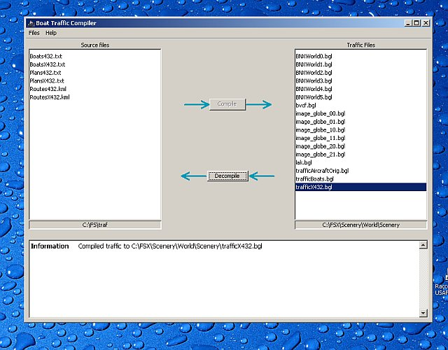

AI Boat Traffic Compiler (AIBTC) is a software to create, edit and
compile
schedules for
ships in Flight Simulator X. It is inspired by the venerable TTools of
Lee Swordy to create AI aircrafts schedules. A prior knowledge of
aircraft AI traffic is needed to understand this document. A good
source of documentation is the help file of TTools 2.0
A big thank you to Lee Swordy
who published the specification of the BGL traffic files which was very
useful to create this tool.
There are multiple ways to get sea traffic in FSX:
Static boats.
There are some static boats in main seaports around the world. As said,
they are only static, they don't move. Their density depends on the "scenery complexity" ruler. You can
add some static boats using standard scenery tools, like Rwy12 or the
object placement tool included with the mission SDK (only in FSX
deluxe).
LivingWorld boats:LivingWorld is the name of
the FSX subsystem that deals with vehicles additions, like cars,
airports ground vehicles and some boats. In FSX, it handles only inland
and leisure boats. The boats managed by LivingWorld have no schedules
or known paths. They just moves randomly near coastlines and on lakes.
You can edit the density of LW boats using the "Leisure boats" ruler on the "Traffic" tab, but not manage each
boat separately.
You can also change the models of the boats used by editing the LWcfg.xml
configuration file. Note that you must recompile this file to
SPB format after editing. The concepts used by LivingWorld traffic
generation is very similar to Autogen features, so I advise you to read
autogen and terrain documentations included in the SDK (don't search
documentation about LWcfg.xml it is yet undocumented)
Mission or
SimConnect-managed
boats : these boats are created ang managed by the mission
system or some kind of third-party add-on using simconnect. The
developper must include a list of waypoints for each moving object he
wants to include in the simulator. These boats are thus restricted to
very special situations and not available in a general flying
context.
AI boats: the AI
boats (Artificial Intelligence) are managed by the same AI system that
provides aerial traffic since FS2002. In FSX, it can also handles
boats. The features offfered by AI boats are very powerful : you can
add your own models, define accurate schedules and routes to follow.
The AI Boat Traffic Compiler Tool address only this type of traffic.
Download
/ Installation
Last version : 0.1 release date: 4 december 2006. Download
here. You must have Java 5.0
installed on your computer before. You can download it free here.
Unzip the file to a temporary directory and double click on aibtc.jar. If JRE 5.0 is correctly
installed, the
application should be launched automatically, otherwise please
verify your java installation.
When you run the application for the first time, you should set up the
correct paths as they are not automatically detected. Choose menu Files->Set source folder to
change the path where you want to store the text files and working
files.
Set up the traffic installation path withmenu
Files->Set destination folder. You should locate your FSX
installation (generally c:\program files\microsoft games\flight
simulator x) and then change to Scenery\World\scenery subdirectory. If
you choose a different directory, your traffic files will not be
visible by FSX.
Conceptual
differences between boats and aircraft traffic
Globally, all the facts needed to create and understand boat traffic
are the same as for aircrafts. However slight differences should be
noted:
Boats do not travel between two ports, but follow a route
instead. All points on the route must be specified while creating the
traffic. There are no known limitation on the number of points. If you
create a traffic that places two boats on the same route, they will not
collide or sink, but ignore themselves.
When a boat arrive at the last point of a route, it can stay at
this point until the departure of the next order (FERRY type) or can
dispatch on a 300 meters circle around the last point (CARGO type). The
cargo type allows to have than one boat at a terminal port at the same
time. When designing cargo boat routes, it is recommended to place
endpoints at least 300 meters away from land.
Boat plans can have more than two legs in their orders, however
if more than two different routes are used, the traffic may cause FSX
to crash
Schedules can be repeated on a periodic basis specified by the
user. The frequency availables are the same as for aircrafts (1 hour -
1 week) plus 2 weeks, 5 weeks and 8 weeks to allow longer travels
Aircraft-specific features are discarded (IFR/VFR, touch'n'goes,
flight numbers, altitudes)
No custom schedules can be used with the TrafficDatabaseBuilder
tool shipped with Flight Simulator X. That's why AIBTC was developed.
Text
traffic file formats
Boat traffic text files are very similar to AI aircraft. There are 3
distinct files needed to compile a valid traffic:
The boats file
(Boats*.txt). It specifies to model names of boats to use in this
traffic. The format is the same as for aircrafts :
AC#7,25,"VEH_water_cargoG_sm"
AC#7 introduce the id number of this entry. Please use different
number for each entries. You can also use the BT# prefix to make a
distinction between ships and aircrafts
25 is the boat speed. Acceptable values are around 15 and 25.
VEH_water_cargoG_sm is the model name. The model name could be
found in the sim.cfg of each boats directory in the SimObjects\Boats
directory under the FSX installation. Each title= line specifiy a different
model name. An invalid name will cause traffic to not appear
The routes file (CSV)
A basic file format for boat routes is specified in the Microsoft
Flight Simulator X SDK. You can use it to compile your traffic. A route
has the following format:
The first number (4721) is the identifier of the route. It should
be unique in the file and be a number
The other numbers are terminal identifiers. They are not used by
the traffic compiler
Follows a block of latitude, longitude pairs. At least two points
are needed in a route. Only decimal position is supported.
Degree-Minute-Seconds notations are not supported yet
The order of the points on a route is important. A route is two-way as
you can specify the travel sense in the boat orders. The canonical way is from the first
point defined in a block to the last, the reverse is from the last to the
first.
Alternatively, you can use a KML file to specify routes instead of a
CSV :
The routes file (KML/KMZ)
(Routes*.kml) The main format used by AIBTC is the GoogleEarth KML format. It can be
viewed and edited using free versions of Google Earth, so it is more
practical to use this format for routes. Only one route file format
(KML or CSV) can be used to compile a route
KML is more stable than KMZ. If you encounter problem using KMZ routes,
please save your file as KML instead.
All paths stored in a KML/KMZ file will be parsed to extract the
routes, however only those referenced by plans will be compiled in the
BGL.
The path name saved in Google Earth is used as the identifier of the
route. If a name is non-numerical, the route will be skipped and could
not be used for defining plans.
Path informations other than latitude and longitude are not used. If
some parse errors are experienced with KML files, it is advised to
remove all styles informations and keep only points coordinates.
Paths in Google Earth are shown undirected, however the canonical
direction is from the first point added to the last point.
Schedule file (Plans*.txt)
Each line of the file specifiy a different boat. Lines starting with
'//' are comments and not read by the program.
The line is split using the comma as a field separator. A plan starts
by 4 fields then is followed by the list of plan orders (at least two)
AC#14,B60264,60%,2Hr
AC#14 define the boat model identifier. Use the same identifiers
as specified in Boats.txt
B60264 is the boat name. It is not displayed or used by the
traffic, but could help to distinguish plans. Only characters valid for
an aircraft registration could be used here. Avoid punctuation marks
and use no more than 10 leters.
60% is the minimum traffic percent that must be configured to see
this boat in the simulator
2Hr is the repeat frequency. You can specifiy it as a number of
hours or weeks, e.g. 1344Hr or 8WEEK
In each order, a departure time is given. The departure is relative
from the start of the period. If a plan has a 4 hours periods, then an
order that starts at 1:45 will be repeated at 5:45, 9:45, 13:45, 17:45,
and 21:45 each day. Although all these times could be used to define a
plan, the first one (between 0:00 and 4:00 the end of the period)
should be used.
For periods that span multiple days, a day number is also used,
followed by a '/' before the time. Day numbers starts at 0. For 1WEEK
periods, 0 means Monday, so for instance 4/15:20:40 means 15:20:40 on
friday.
For periods that span multiple weeks, the day number 0 is (apparently)
the first monday of the year, though it remains unsure. An
order consists in 5 comma separated fields:
00:18:19,00:24:06,1754,reverse,ferry
The first field is the departure time or day/time if period is
more than 24 hours. The time is always GMT.
The second field the arrival time. It is not used by the program
since the arrival time is recalculated based on the route length and
the boat speed. When a file is compiled, calculated arrival times are
inserted back in the file. It's generally a good idea to check the
calculated arrival time to see if the next leg does not starts before
the arrival of the current leg. Otherwise the boat may conflict and not
appear at correct times.
1754 is the route number, as defined by the Boats.KML or
Boats.CSV file. Only numerical identifiers are supported
The fourth field is a boolean indicating the travel direction on
the route. If it is marked reverse,
then the route is followed from the last point to its first point. Any
other word in this position means normal direction
The last flag concern terminal parking type. As said before, a
boat marked FERRY will stop at the endpoint of the route. The default
behaviour is not FERRY, so any other word in the leg definition will
cause the boat to find a parking spot on a circle around the endpoint.
When designing flight plans, users should be very careful to the order
and directions of the legs. Like aircrafts schedules, a boat schedule
must loop back to its first point before the end of its period. However
improper route definitions and direction may cause the circuit to
break. AIBTC check circuit continuity and errors.
A complete plan definition looks like this:
AC#14,B60264,60%,2Hr,00:18:19,00:24:06,1754,reverse,ferry,01:18:19,01:24:06,1754,normal,ferry
Note that the plan use only one route with one leg marked as "normal"
and the other as "reverse". This is the safest way of creating a boat
plan. Due to some limitations in the AI subsystem, no more than two
different routes (not including direction) could be used in one plan.
The contrary may cause FSX to crash.
You can fortunately have more than two orders provided they use only
two routes and makes a correct closed circuit.
Using
the software
Users familiar with the TTools 2.0 graphical interface will have no
problems using AIBTC:

First, path settings should be set correctly using the Files menu. Left and right file
lists will only show file types appropriate for an operation
(TXT/CSV/KML/KMZ files for compilation and BGL for decompilation).
To compile a traffic, select one of your text files on the left panel.
Other text files needed for the compilation will be automatically
selected base on the file names. If not please make sure that your
traffic files are all named with the same suffix:
BoatsProject.txt RoutesProject.kml PlansProject.txt
Click on the compile button
and the traffic BGL will be generated. The output directory must be
correctly set to the FSX Scenery/World/scenery directory.
To decompile a traffic, select a traffic file (bgl) and click on Decompile. 3 text files will be
generated in the source directory.
Actually no other features or command line arguments are supported by
AIBTC.
Example traffic
An example traffic is providen in the "Samples" subdirectory of AIBTC.
It contains the source of an example aircraft carrier strike group. The
ships depart Norfolk at 16:50Z and go to Napoli. The period of the
traffic is 8 weeks, meaning that you can see the group departing at the
following dates:
5 January 2006
2 March 2006
27 April 2006
22 June 2006
17 August 2006
12 October 2006
7 December 2006
If you experience problem, for example traffic not appearing; a good
debugging tool is the TrafficExplorer toolbox. It can be installed with
the FSX SDK. To activate it, edit the dll.xml
file situated in Document and
settings\User\Application Data\Microsoft\FSX and change the Disabled status to false in the configuration block of
TrafficToolbox.
In the traffic explorer or map, uncheck the aircraft only option to see all
boats.